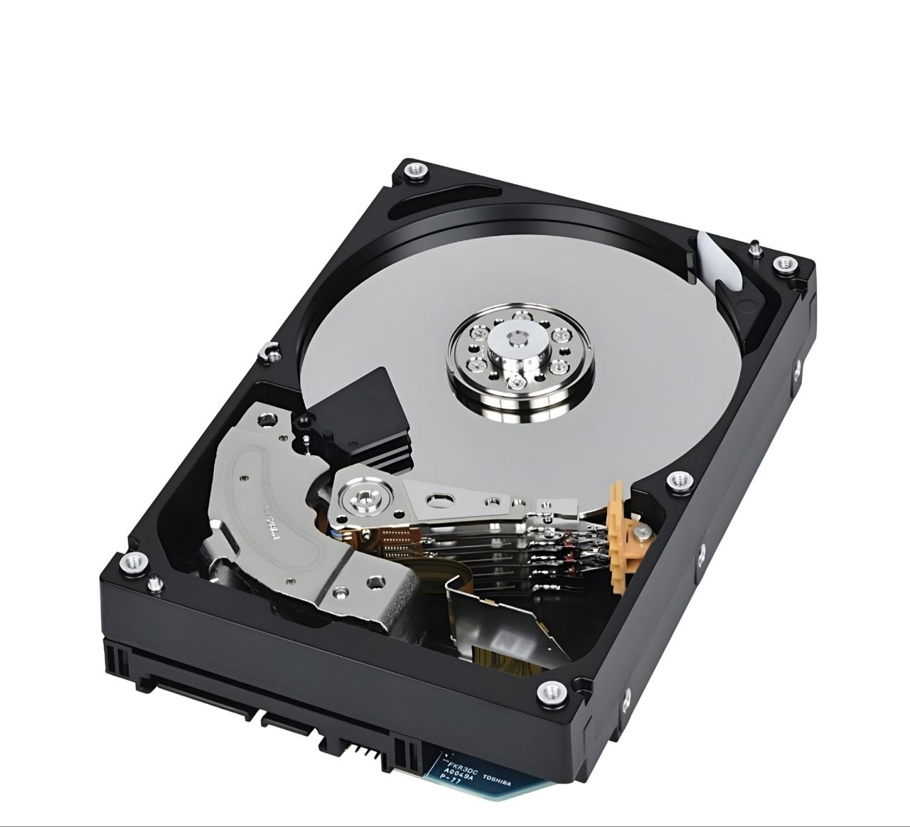
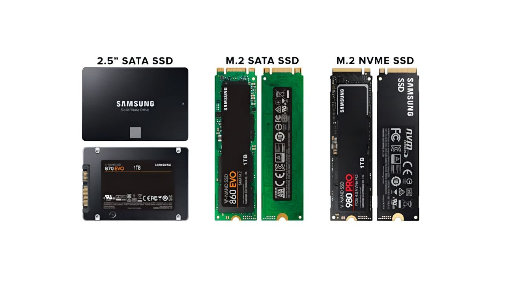

When you buy a computer, laptop, or external storage device, you may see two common names: SSD and HDD. Both are used to store files, apps, games, photos, and other data. But they do not work in the same way.
An SSD is usually much faster and has no moving parts. An HDD uses spinning disks to store data and is often useful when you need a large amount of storage. So, which one should you choose?
In this guide, we will explain SSD vs HDD in simple English. You will learn how they work, their main differences, their advantages and disadvantages, and which one may be better for your needs in 2026.
1. What Is an SSD?
SSD stands for Solid State Drive. It is a storage device that saves your data using flash memory. Unlike an HDD, an SSD does not need spinning disks or moving parts to read and write data.
This design helps an SSD access files much faster. Your computer can start more quickly, apps can open sooner, and file transfers can take less time compared with many traditional hard drives.
Why do people use SSDs?
- To make a computer start faster.
- To open apps and programs more quickly.
- To reduce game loading times.
- To move large files faster.
- To get quiet storage without spinning disks.
SSDs are available in different sizes and connection types. Some connect through SATA, while others use the M.2 form factor and NVMe technology.
2. What Is an HDD?
HDD stands for Hard Disk Drive. It is a storage device that uses spinning magnetic disks to save your data. A small mechanical part called a read/write head reads and writes information on these disks.
HDD technology has been used in computers for many years. It is still useful when you need a lot of storage space for photos, videos, documents, backups, and other large files.
Why do people use HDDs?
- To store large collections of files.
- To keep backups of important data.
- To store videos, photos, and media libraries.
- To add more storage to a desktop computer or NAS system.
HDDs are available in different storage capacities and physical sizes. Many desktop HDDs use a 3.5-inch design, while many laptop HDDs use a 2.5-inch design.
3. How Do SSD and HDD Work?
How an SSD works
An SSD stores information in electronic memory cells. When you open a file, the drive reads the stored data electronically. It does not need to move a mechanical head or wait for a disk to spin.
How an HDD works
An HDD stores information on rotating magnetic disks. When your computer needs a file, the drive moves its read/write head to the correct location. The disk must also rotate to bring the data into position.
This mechanical process is one of the main reasons why an HDD is usually slower than an SSD.

4. SSD vs HDD: Main Differences
Both devices store your data, but their technology affects speed, noise, power use, and physical design.
| Feature | SSD | HDD |
|---|---|---|
| Full Form | Solid State Drive | Hard Disk Drive |
| Technology | Flash memory | Magnetic disks |
| Moving Parts | No | Yes |
| Speed | Generally faster | Generally slower |
| Noise | Silent operation | May produce mechanical noise |
| Shock Resistance | Generally better | More sensitive to physical shock while operating |
| Power Use | Often lower | Often higher |
| Best Use | Operating systems, apps, and games | Large files and backups |
These are general differences. Actual performance and power use depend on the exact drive model, connection, computer, and workload.
5. Which One Is Faster?
In most everyday computer tasks, an SSD is much faster than a traditional HDD.
For example, an SSD can help your computer start faster, open programs sooner, and load files with less waiting. This can make an older computer feel more responsive when you replace its HDD with a compatible SSD.
Why is an SSD faster?
- It does not need to spin a disk.
- It does not need to move a mechanical read/write head.
- It can access many files with less delay.
- NVMe SSDs can use a fast PCIe connection.
However, not every SSD has the same speed. A SATA SSD and an NVMe SSD have different performance limits. The exact speed also depends on the drive model and the computer's hardware.
6. SSD vs HDD for Gaming
If you play PC games, an SSD is usually the better choice for installing your games.
Many modern games contain large files, detailed environments, and many small assets. An SSD can help the game load these files faster. This can reduce waiting time when starting a game or moving between areas.
Does an SSD increase FPS?
Not usually. An SSD mainly improves storage speed and loading times. It does not directly replace your graphics card or processor. Your FPS mostly depends on your GPU, CPU, memory, game settings, and the game itself.
Can you play games from an HDD?
Yes. Many games can still run from an HDD. However, some newer games may have longer loading times or may recommend an SSD. Always check the game's official system requirements.
For a gaming computer, a practical setup is to install Windows and frequently played games on an SSD. You can use an HDD for extra storage if you need more space.
7. Storage Capacity and Price
Storage capacity tells you how much data a drive can hold. For example, a 1TB drive can store more data than a 500GB drive.
HDDs are often a cost-effective choice when you need a large amount of storage. This makes them useful for storing video collections, backups, and other files that do not need the fastest access speed.
SSDs usually cost more per unit of storage than HDDs, although prices depend on capacity, technology, brand, and market conditions. The gap can change over time, so compare current prices before buying.
Which one gives you more storage for your money?
If your main goal is to store a large amount of data at a lower cost, an HDD may be a good option. If you want faster everyday performance, an SSD may offer better value for your computer experience.
8. Durability and Lifespan
SSDs and HDDs can both last for years, but they can fail for different reasons.
SSD durability
An SSD has no moving mechanical parts. This makes it less sensitive to physical shock than a traditional HDD, especially when the drive is operating.
However, SSD flash memory has a limited number of write cycles. Modern SSDs use technology to manage wear, but the drive can still fail because of electronic or other hardware problems.
HDD durability
An HDD has moving parts. A strong physical shock, vibration, or mechanical failure can damage the drive. This is why you should handle external hard drives carefully, especially while they are running.
Which one lasts longer?
There is no simple answer. A good SSD can last a long time, and a good HDD can also work for many years. Lifespan depends on product quality, workload, temperature, usage, and storage conditions.
Most importantly, do not trust one drive as your only copy of important files. Keep a separate backup of your valuable data.
9. Different Types of SSDs
Before buying an SSD, you should understand that SSDs come in different physical designs and connection types.
SATA SSD
A SATA SSD uses the SATA interface. Many 2.5-inch SATA SSDs are designed to replace older laptop or desktop hard drives. They can be a useful upgrade for computers that support SATA storage.
M.2 SATA SSD
An M.2 SATA SSD uses the small M.2 physical design but communicates through the SATA interface. It is not the same as an NVMe SSD, even though both may look similar.
NVMe SSD
NVMe SSDs use the NVMe protocol and connect through PCIe. Many modern M.2 SSDs use this technology. They can offer much higher performance than traditional SATA SSDs.
External SSD
An external SSD connects to a computer through a USB or another supported connection. It is useful when you need portable storage for files, projects, and backups.

10. Compatibility: What Should You Check Before Buying?
Not every SSD or HDD works with every computer. Before buying a new drive, check your device's storage support.
- Connection type: Check whether your computer supports SATA, M.2 SATA, or PCIe NVMe.
- Physical size: Check whether the device supports a 2.5-inch drive, 3.5-inch drive, or M.2 module.
- M.2 support: An M.2 slot does not always support every type of M.2 SSD. Check the motherboard or laptop manual.
- Storage capacity: Check the maximum supported capacity if your device has a limit.
- Operating system: Make sure your operating system can use the drive and that the correct installation method is followed.
- Available space: Check whether your computer has an empty drive bay or storage slot.
If you are not sure, check your laptop or motherboard manufacturer's official specifications before purchasing.
11. Pros and Cons of SSD and HDD
SSD Pros
- Faster file access and everyday performance.
- Quick computer startup and app loading.
- No moving mechanical parts.
- Silent operation.
- Better resistance to physical shock during normal use.
SSD Cons
- Usually costs more per unit of storage than an HDD.
- Has a limited amount of write endurance.
- Different SSD types have different compatibility requirements.
HDD Pros
- Often offers lower-cost large storage.
- Useful for backups and large media collections.
- Available in high storage capacities.
HDD Cons
- Slower than most SSDs in everyday tasks.
- Contains moving mechanical parts.
- Can make noise or create vibration.
- More sensitive to physical shock while operating.
12. Which One Should You Buy in 2026?
The best choice depends on what you want to do with your computer and how much storage you need.
Choose an SSD if:
- You want your computer to start faster.
- You use large apps or professional software.
- You play modern PC games.
- You edit photos or videos.
- You want a quiet and responsive computer.
Choose an HDD if:
- You need a lot of storage space.
- You want to store large video and photo collections.
- You need extra space for backups.
- You want to keep the storage cost lower.
Can you use both SSD and HDD?
Yes. You can use both in the same desktop computer or in a laptop that supports two storage devices.
For example, you can install your operating system, apps, and frequently used games on an SSD. Then you can use an HDD to store large videos, photos, documents, and backups.
This combination gives you fast everyday performance and extra storage space. Just make sure your computer has the required connections and physical space.
13. Frequently Asked Questions
Is SSD better than HDD?
For speed and everyday computer performance, an SSD is usually better. An HDD can be a better choice when you need large storage at a lower cost.
Is a 1TB SSD better than a 1TB HDD?
Both offer the same stated storage capacity. A 1TB SSD is usually faster, while a 1TB HDD may cost less. The better choice depends on your budget and needs.
Does an SSD make a computer faster?
Yes, an SSD can make a computer feel much faster when starting the operating system, opening programs, and loading files. It does not automatically make every task faster.
Does an SSD increase gaming FPS?
An SSD mainly improves loading times. It usually does not directly increase FPS because frame rates depend more on the graphics card, processor, memory, and game settings.
Can I replace my HDD with an SSD?
In many computers, yes. But you must check the supported drive size and connection type first. You may also need to transfer or reinstall your operating system.
Is NVMe faster than SATA SSD?
NVMe SSDs can offer much higher transfer speeds than SATA SSDs. Actual performance depends on the specific drive, PCIe generation, and computer support.
Can an HDD be used for gaming?
Yes, many games can run from an HDD. However, loading times may be longer, and some newer games may require or recommend SSD storage.
Is an external SSD better than an external HDD?
An external SSD is usually faster and more resistant to physical shock. An external HDD may offer more storage for the money. Choose based on speed, capacity, and portability.
Can an SSD fail suddenly?
Yes. An SSD can fail because of hardware, electronic, or other problems. Keep backups of important files even when you use an SSD.
Should I keep my files on an SSD or HDD?
Use an SSD for files and programs that you access often. An HDD can be useful for large collections and extra storage. Keep a separate backup of important data.
Final Thoughts
SSD and HDD drives both have useful roles in modern computers. An SSD is usually the better choice when speed, quick loading, and everyday performance matter most. An HDD is still useful when you need a large amount of storage at a lower cost.
If your budget allows, using both can be a practical setup. Keep your operating system and frequently used apps on an SSD, and use an HDD for extra files and backups.
Before buying, check your computer's supported drive type, size, and connection. The right storage device is the one that fits your needs, budget, and hardware.
Useful Resources
- Crucial Official Website — SSD and memory product information.
- Seagate Official Website — Hard drive and storage product information.
- Samsung Semiconductor — Semiconductor and storage technology information.